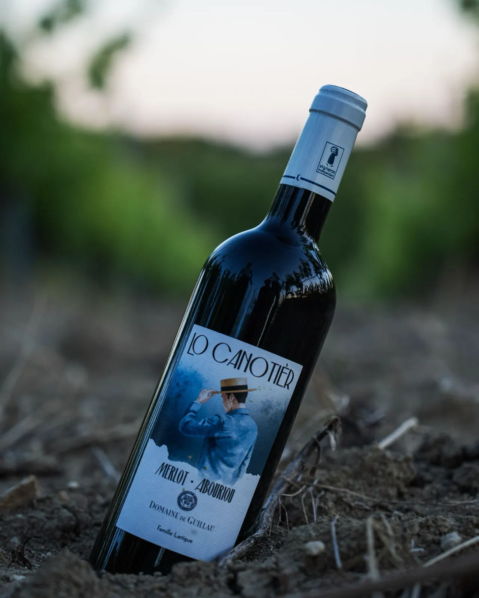

Merlot et Abouriou, IGP Comté Tolosan
Lo Canotièr
Un rouge léger et fruité. L’abouriou, riche en couleur et en tannins, assemblé au merlot qui apporte du fruit, de la souplesse et de la rondeur.
Un hommage au chapeau canotier, typique de Caussade, non loin des vignes qui ont vu naître ce vin.